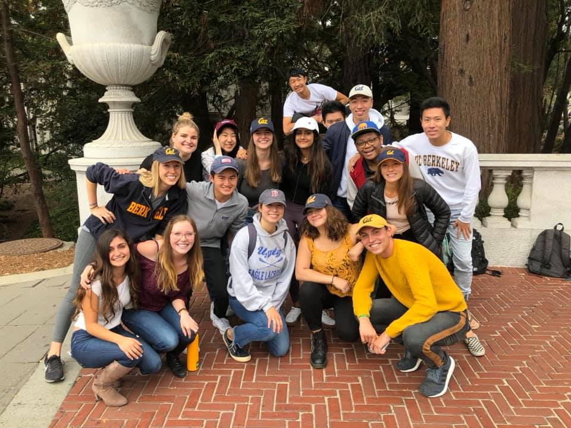

Fall 2016 Auditions!
Love to sing? Audition for us! No experience necessary.
Check out our Auditions page to sign up.
Drawn to Scale, affectionately known as DtS, is a co-ed a cappella group founded at UC Berkeley in 2008. We perform music across a variety of genres, from rock to pop, from hip-hop to musical theater, and even the occasional YouTube hit. DtS performs at events both on the UC Berkeley campus and in the local community. Shoot us a message to book us for your event!
SEE US ON SPROUL

Come see DtS perform every Friday at 12PM on Sproul under Sather Gate!